PART 1. 총론 — 철도 개념·분류·역사▲
개념 01철도 특징 비해당
| 철도 특징 O | 철도 특징 X |
|---|---|
| 신속성·신뢰성·안정성·친환경성·경제성 에너지효율성·대량수송성·장거리성·편리성 | 기동성 ❌ (자동차 특징) |
⚠️ 함정 주의: 기동성 = 자동차 특징 ← 철도 특징으로 교체 함정
개념 02철도 법제상 분류 비해당
국유철도 / 지방철도 / 경편철도 / 전용철도
⚠️ 함정 주의: 공영철도 → 법제상 분류 아님
개념 03수송수요 예측방법 4종 + 비해당
| 방법 | 설명 |
|---|---|
| 시계열분석법 | 시간적 경과에 따른 과거 변동 통계 |
| 요인분석법 | 요인변수와 수요 관계 분석 |
| OD표 작성법 | 출발지-도착지 교통량 행렬 |
| 중력모델법 | 교통량 ∝ 수요량 / 거리에 반비례 |
⚠️ 함정 주의: 선로이용률 → 예측방법 아님 (선로용량 산정 지표)
⚠️ 함정 주의: 중력모델 거리: 반비례 ← 비례로 교체 함정
개념 04철도 역사 연도
| 사건 | 연도 | 함정 |
|---|---|---|
| 세계 최초 여객철도 (영국 리버풀~맨체스터) | 1830년 | 1835년 교체 |
| 우리나라 최초 철도 (경인선) | 1899년 | 1898·1900 교체 |
| 경부선 전구간 개통 | 1905년 | 1903·1907 교체 |
개념 05수송 서비스 개량 vs 수송력 증강
| 구분 | 예시 | 비해당 |
|---|---|---|
| 수송 서비스 개량 | 역 냉난방화, 에스컬레이터, 장애자시설 확충 | |
| 수송력 증강 | 복선화, 전철화, 차량 증차 | 철도관련법령 정비 ❌ |
PART 2. 차량▲
개념 06철도 종류 분류
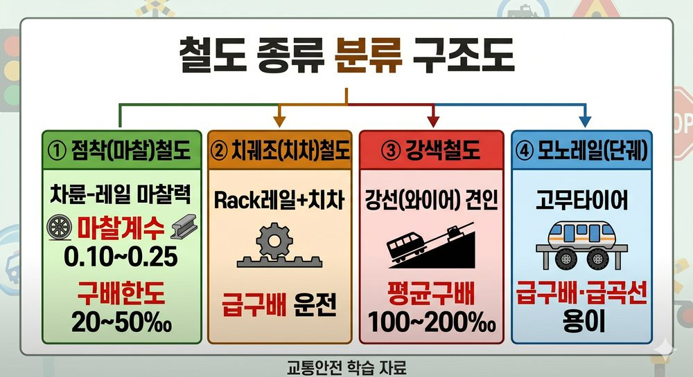
철도 종류 분류 구조도
| 종류 | 구동방식 | 구배한도/특징 |
|---|---|---|
| 점착(마찰)철도 | 차륜-레일 마찰력 | 마찰계수 0.10~0.25 / 구배한도 20~50% |
| 치궤조(치차)철도 | Rack레일+치차 | 급구배 운전 가능 |
| 강색철도 | 강선(와이어) 견인 | 평균구배 100~200% |
| 모노레일 | 고무타이어 | 급구배·급곡선 용이 |
개념 07전기방식 비교
| 방식 | 대표 | 특징 |
|---|---|---|
| 교류 25,000V | 국철 전기철도 | 점착성능 우수, 소형이어도 대량 견인 |
| 직류 1,500V | 구형 도시철도 | 터널 단면 작음, 통신유도장애 적음 |
⚠️ 함정 주의: 직류 25,000V → 없음. 교류 25,000V가 국철 표준
개념 08집전장치 비해당
집전장치 O: 팬터그래프 / 트롤리 폴 / 뷰겔 / 집전슈
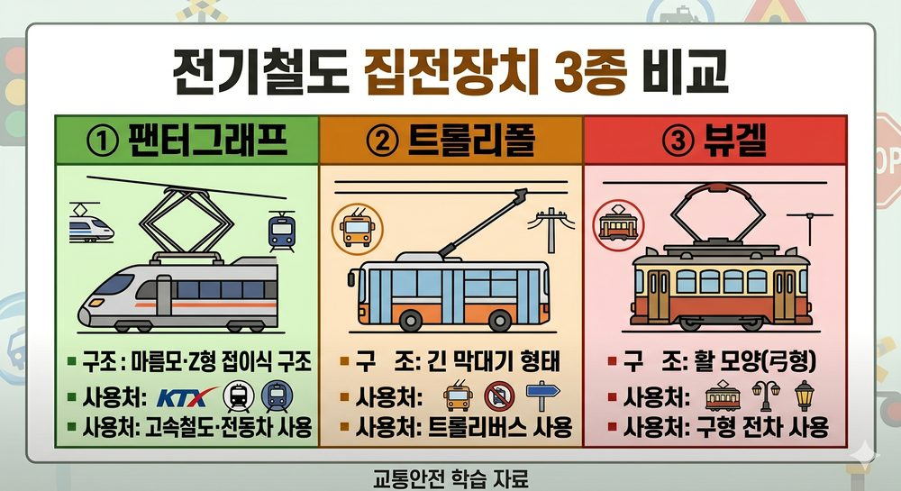
집전장치 종류 비교
⚠️ 함정 주의: 축전지 → 집전장치 아님 (전력 저장장치)
개념 09제동·공전 핵심
| 항목 | 내용 | 함정 |
|---|---|---|
| 철도 제동방식 | 공기제동 | 유압 아닌 공기압 |
| 점착력과 제동력 | 점착력 ≥ 제동력 | >, ≤, < 교체 |
| 공전 방지 | 레일 모래 / 기관차 정비 / 선로보수 | 출발 급가속 = 공전 유발 ❌ |
⚠️ 함정 주의: 출발 시 급가속 → 인장력 최대화 ❌ → 공전 유발 (방지법 아님)
개념 10모노레일 특징·문제점
| 특징(장점) | 문제점 |
|---|---|
| 소음·진동·대기오염 거의 없음 | 분기장치 복잡, 작동시간 김 |
| 고무타이어 → 급구배·급곡선 용이 | 타 교통기관과 승환 어려움 |
| 지하철 대비 건설비 싸고 공기 짧음 | 차량고장 시 피난 시간 오래 걸림 |
⚠️ 함정 주의: '소음·진동·대기오염 많다' → 틀림. 거의 없음
PART 3. 선로▲
개념 11선로용량 수치
| 종류 | 수치 | 함정 |
|---|---|---|
| 단선 | 약 80회/일 | 100회 교체 |
| 복선 | 약 240회/일 | 200회 교체 |
| 전차전용 복선 | 70~100회 | |
| 선로이용률 표준 | 60% | 80% 교체 |
| 용량 종류 | 용도 |
|---|---|
| 한계용량 | 기존선 수송능력 한계 판단 |
| 실용용량 | 실제 운용 기준 |
| 경제용량 | 최저 수송원가가 되는 열차횟수 |
개념 12건축한계 vs 차량한계
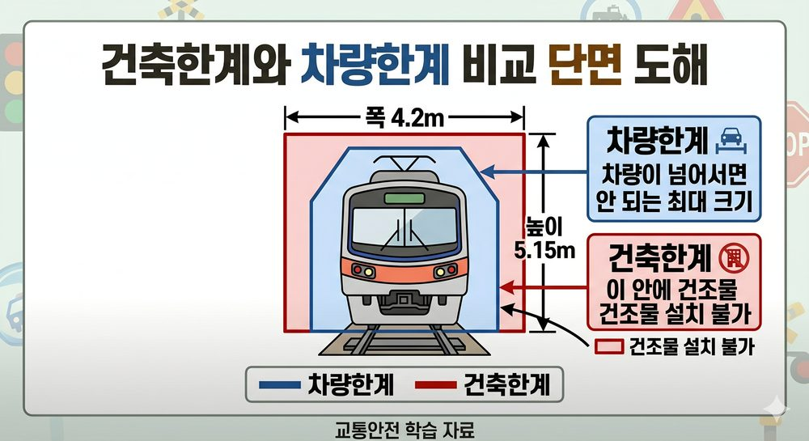
건축한계 vs 차량한계
| 구분 | 의미 | 수치 |
|---|---|---|
| 건축한계 | 건조물 설치 불가 범위 | 폭 4.2m, 높이 5.15m |
| 차량한계 | 차량 크기 제한 범위 |
개념 13CTC vs ATC ⚠️ 핵심 함정
| 시스템 | 기능 | 함정 |
|---|---|---|
| CTC (열차집중제어) | 원격조작·감시 / 인력절약 / 평균속도 향상 / 선로용량 극대화 | 자동제동과 혼동 |
| ATC (자동열차제어) | 열차속도 높아지면 자동으로 제동 | CTC로 교체 함정 |
⚠️ 함정 주의: 열차속도 높아지면 자동제동 = ATC (CTC와 혼동 — 최빈출)
개념 14정거장 종류 비해당
| 정거장 종류 | 기능 |
|---|---|
| 역 | 여객 승강, 화물 적하 |
| 조차장 | 차량 입환·조성 |
| 신호장 | 열차 교행 또는 대피 |
⚠️ 함정 주의: 신호소 → 정거장 아님 (신호장과 구별)
PART 4. 궤도·레일·분기기▲
개념 15레일 종류 + 용접
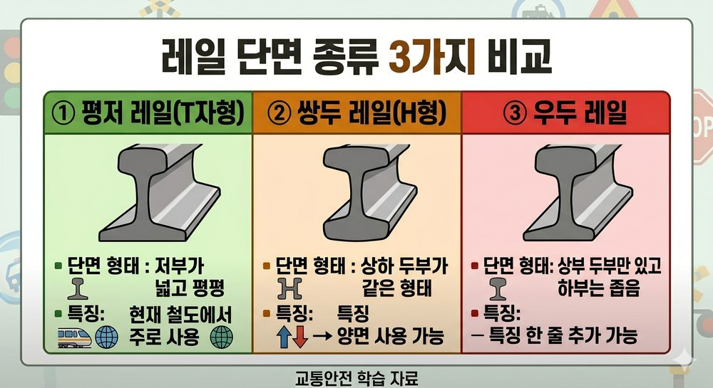
레일 종류 단면 비교
| 레일 | 특징 |
|---|---|
| 평저 레일 | 굽힘강도·마모·횡압 안정성 우수 → 철도에서 주로 사용 |
| N레일 | 높이 커서 단면 2차 모멘트 효율화 |
| 용접 방법 | 특징 |
|---|---|
| ① 플래시 버트 용접 | 효율 최고 (공장 자동화) |
| ② 가스압접 | |
| ③ 테르미트 용접 | 산화철+알루미늄, 현장에서 직접 |
| ④ 엔크로즈드 아크 용접 |
개념 16장대레일 + 복진
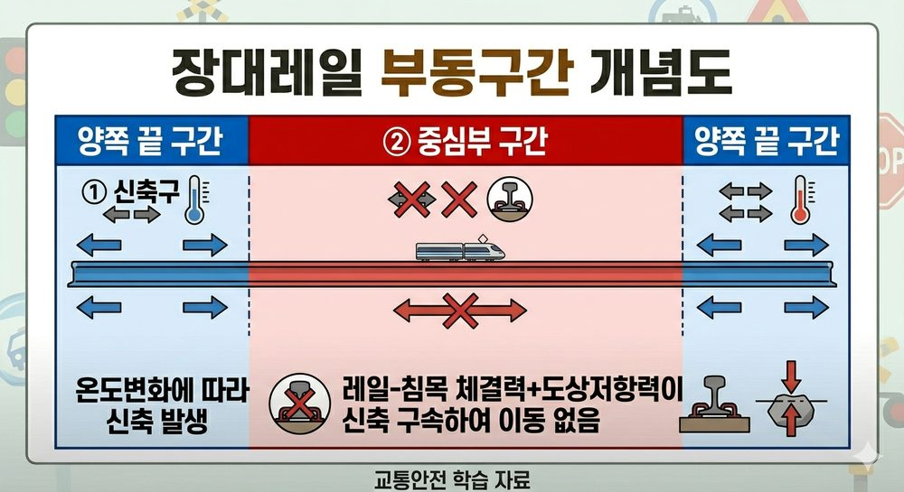
장대레일 부동구간
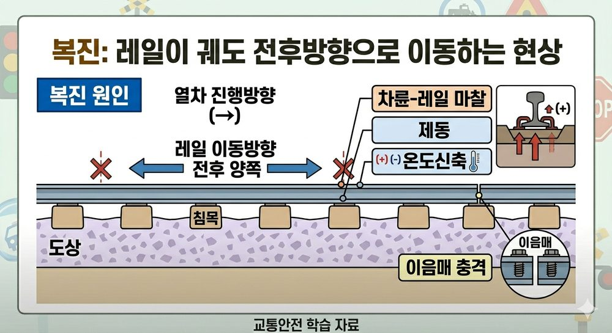
복진 현상 방향 도해
| 항목 | 내용 |
|---|---|
| 장대레일 정의 | 200m 이상 레일 |
| 부동구간 | 레일 중심부 — 체결력+도상저항력이 신축 구속 |
| 복진 정의 | 열차 주행·온도변화로 레일이 전후방향으로 이동 |
| 재설정 | 체결장치 풀기 → 레일 가열(28℃) → 재체결 |
⚠️ 함정 주의: 레일 통과톤수: 2~5억 톤 ← 10억 톤 교체 함정
개념 17침목 비교
| 구분 | 장점 | 단점 | 함정 |
|---|---|---|---|
| 목침목 | 탄성·완충성 큼 / 전기절연도 큼 | 부식 우려 (6개월~1년 건조+방부처리) | 부식 없다 ❌ |
| PC침목 | 내구년한 김 / 궤도안정 | 전기절연도 낮음 | 절연도 높다 ❌ |
| PC침목 검사 | 주기 |
|---|---|
| 본선 | 연 1회 이상 |
| 측선 | 2년 1회 이상 |
⚠️ 함정 주의: PC침목 측선 검사: 2년 1회 ← 1년 1회 교체
개념 18분기기 종류
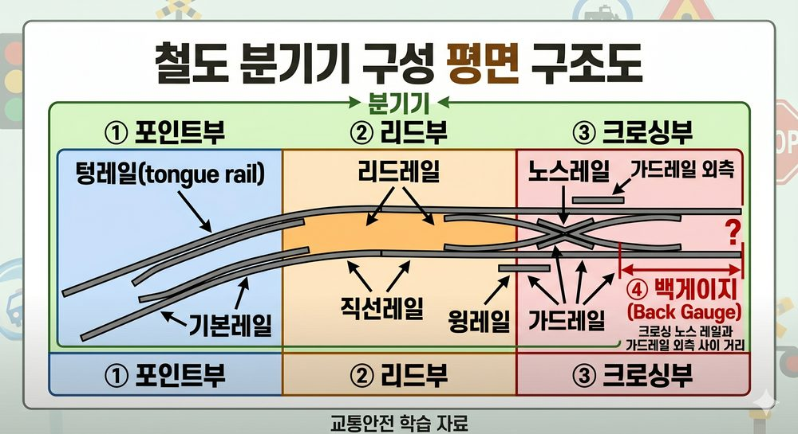
분기기 구성 부품 구조도
| 종류 | 특징 |
|---|---|
| 탄성분기기 | 텅 레일+리드 레일 일체화 → 힐 이음매부 없음 |
| 탈선분기기 | 신호기 오인 시 차량 고의 탈선 → 충돌 방지 |
| 다이아몬드 크로싱 | 두 선로가 평면교차하는 개소 |
⚠️ 함정 주의: 조립 크로싱 마모 → 용접육성으로 원형복귀 가능 (교체 불필요)
PART 5. 선로설비·정거장설비▲
개념 19건널목 3종 분류 ⚠️ 최빈출
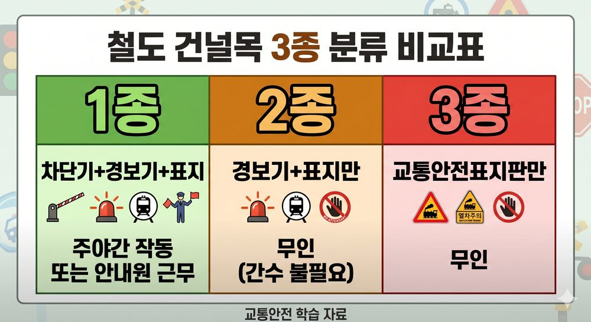
건널목 3종 비교표
| 종류 | 설비 | 인원 |
|---|---|---|
| 1종 | 차단기 + 경보기 + 표지 | 주야간 작동 또는 안내원 근무 |
| 2종 | 경보기 + 표지만 | 무인 (간수 불필요) |
| 3종 | 교통안전표지판만 | 무인 |
⚠️ 함정 주의: 2종 = 차단기 없음, 경보기+표지만, 무인
★ 건널목 호륜레일 간격: 직선구간 본선과 65mm (안전레일 180mm와 혼동 주의)
개념 20선로 4종 비교 ⚠️ 핵심 함정
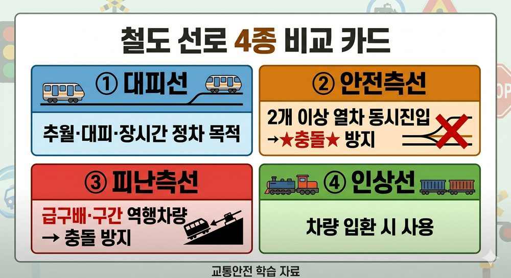
선로 4종 비교
| 선로 | 목적 |
|---|---|
| 대피선 | 추월·대피·장시간 정차 |
| 안전측선 | 2개 이상 열차 동시진입 시 충돌 방지 |
| 피난측선 | 급구배에서 역행차량 충돌 방지 |
| 인상선 | 차량 입환 시 사용 |
⚠️ 함정 주의: 안전측선 ≠ 피난측선 — 안전측선=동시진입 / 피난측선=급구배 역행
개념 21정거장 형식
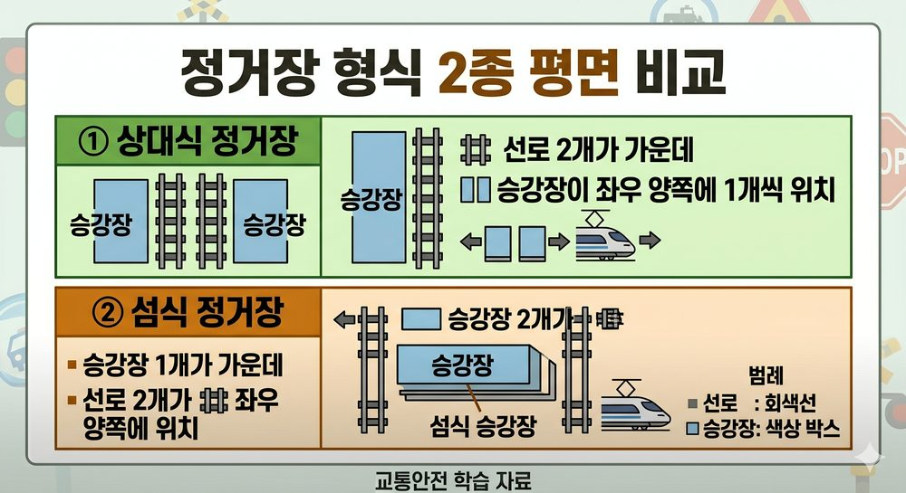
정거장 형식 비교
| 형식 | 특징 |
|---|---|
| 상대식 | 단선 중간역, 장래 확장 용이, 상하열차 동시착발 안전 |
| 섬식 | 승강장이 섬처럼 가운데 위치 |
⚠️ 함정 주의: 섬식 = 승강장 형태 (차막이 종류에 포함시키면 오답)
개념 22안전레일 vs 호륜레일 간격 ⚠️
| 종류 | 용도 | 간격 |
|---|---|---|
| 안전레일 | 고가부 탈선 시 피해 최소화 | 본선과 최대 180mm |
| 호륜레일 | 건널목 구간 차륜 유도 | 직선 본선과 65mm |
⚠️ 함정 주의: 안전레일 '65mm' → 틀림. 180mm (65mm는 호륜레일)
PART 6. 선로보수▲
개념 23선로순회검사 주기
| 담당자 | 주기 | 함정 |
|---|---|---|
| 선로관리원 | 매일 1회 이상 | |
| 보선장 | 주 1회 이상 | 주 2회 교체 |
| 분소장 | 월 1회 이상 | |
| 소장 | 필요시 |
⚠️ 함정 주의: 보선장 주 1회 ← 주 2회 교체 함정
개념 24유간검사 + 기계화 효과
| 항목 | 내용 |
|---|---|
| 유간검사 시기 | 여름·겨울 이전에 연 2회 |
| 기계화 효과 | 작업능률 향상 / 균질 작업 / 열차상간 시간활용도 향상 |
⚠️ 함정 주의: 유간검사: '가장 큰 시기에 시행' → 틀림. 이전에 실시
⚠️ 함정 주의: 기계화: 시간활용도 '저하' → 틀림. 향상
PART 7. 신호기 분류 ⚠️ 최빈출▲
개념 25구조상 vs 조작상 분류
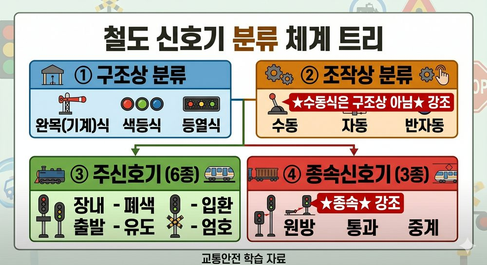
신호기 분류 체계 트리
| 분류 기준 | 종류 |
|---|---|
| 구조상 | 완목(기계)식 / 색등식 / 등열식 |
| 조작상 | 수동 / 자동 / 반자동 |
⚠️ 함정 주의: 수동식 = 조작상 분류 (구조상 분류 아님) — 기출 반복
개념 26주신호기 vs 종속신호기
| 구분 | 종류 |
|---|---|
| 주신호기 | 장내·출발·폐색·유도·입환·엄호 |
| 종속신호기 | 원방·통과·중계 |
⚠️ 함정 주의: 원방·통과·중계 = 종속신호기 ← 주신호기로 교체 함정
개념 27위식 신호기
| 종류 | 표시 구간 |
|---|---|
| 3위식 | 앞 2구간 상태 표시 (정지·주의·진행) |
| 4위식 | 앞 3구간 상태 표시 |
⚠️ 함정 주의: 3위식 = 앞 2구간 ← '앞 3구간' 교체 함정